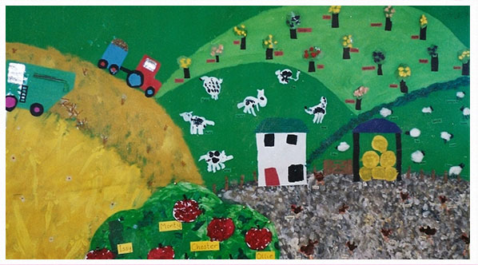
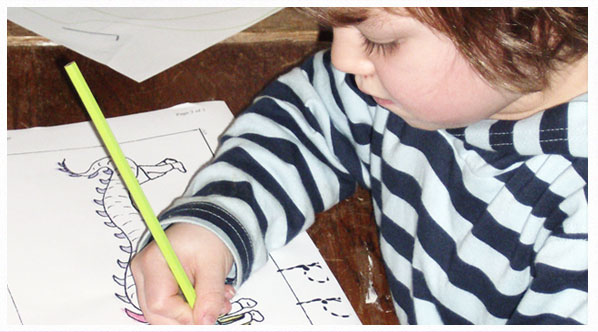

Roadend is a place where children can feel at home from home. This encourages a joy of learning, curiosity, creativity and imagination. A warm, interesting, fun learning environment which nurtures the children’s social integration by allowing them freedom to choose and time to discover their place in the world.
“Children Thrive in the marvellously child centred environment. They all thoroughly enjoy their time more...
more...“Children Thrive in the marvellously child centred environment. They all thoroughly enjoy their time more...
06.11.11 We are always checked and inspected by ofsted and have received good results everytime.
more...
06.11.11 We are always checked and inspected by ofsted and have received good results everytime.
more...